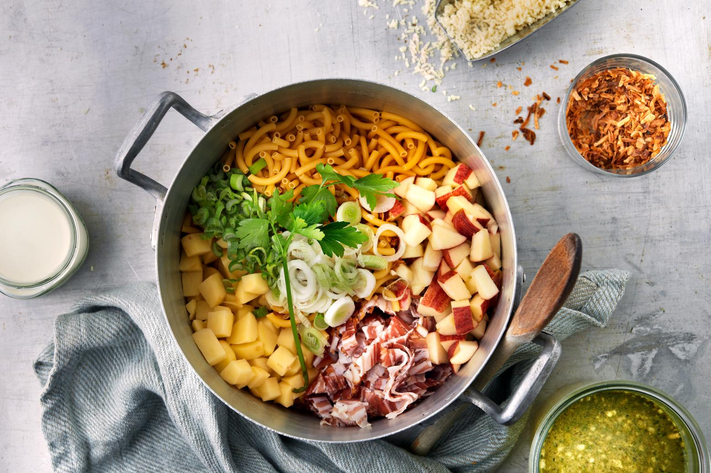

ÄLPLER ONE POT
- 300 gTeigwaren (z.B. Älplermagronen)
- 200g festkochende Kartoffeln, in ca. 1 cm grossen Würfeli
- 1rotschaliger Apfel, in Würfeln
- 120 gBauernspeck, in Streifen
- 1Bundzwiebel mit dem Grün, in feinen Ringen
- 2 dlVollrahm
- 6 dlGemüsebouillon
Fertigstellen:
- 60 gAppenzeller, gerieben
- Salz, Pfeffer, nach Bedarf
- 30 gRöstzwiebeln
One Pot zubereiten
Teigwaren und alle Zutaten bis und mit Bouillon in eine grosse Pfanne geben, mischen, aufkochen. Offen unter gelegentlichem Rühren bei mittlerer Hitze ca. 8 Min. kochen, bis die Teigwaren al dente sind.
Fertigstellen
Käse daruntermischen, würzen, Röstzwiebeln darauf verteilen.